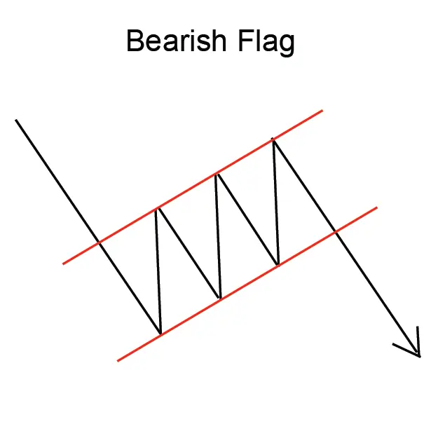
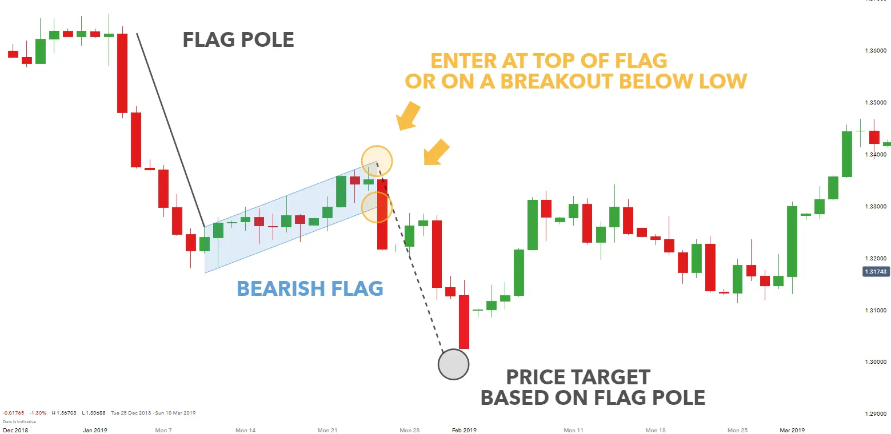

Implicaciones
Una bandera (bearish) se considera una señal bearish, indicando que la tendencia descendente actual puede continuar.
Descripción
Una bandera (Bearish) sigue una caída abrupta o casi vertical en el precio, y consiste en dos
líneas de tendencia paralelas que forman una forma de bandera rectangular. La bandera puede
ser horizontal (como si el viento la estuviera soplando), aunque a menudo tiene una
ligera tendencia hacia arriba.
La tendencia de caída vertical, que precede a una bandera, puede ocurrir debido a las
reacciones de los compradores a un anuncio desfavorable de la compañía, como un caso judicial,
o una salida repentina e inesperada de un CEO. La fuerte disminución de los precios a veces se
denomina "flagpole" o "mast".

La forma rectangular de la bandera es el producto de lo que los analistas técnicos llaman consolidación. Consolidación ocurre cuando el precio parece rebotar entre un límite de precio superior y inferior. El patrón de formación de la bandera (Bearish) refleja la reacción de los vendedores que están dispuestos a vender a un costo más bajo, y la afluencia de compradores que inadvertidamente impulsan el precio mientras compiten por comprar al mejor precio posible.
Una señal de baja ocurre cuando el precio rebota más allá de la línea de tendencia inferior de la formación de la bandera, y continúa el movimiento original hacia abajo del precio. Esto se considera una confirmación de patrón.
Cuando hablan de Flags, los analistas técnicos pueden usar jargón y referirse a la bandera como "volando a medio mast". Visualmente, esta referencia no es nada como una bandera a medio mastín, como en un día de luto nacional. En cambio, este término se refiere a la ubicación de la bandera -en el punto medio de lo que de otro modo sería una tendencia descendente continua.
Características importantes
Las siguientes son características importantes para este patrón.
Líneas de tendencia
Las banderas son muy similares a los Pennants. Sin embargo, con una bandera, las líneas de tendencia de los precios tienden a correr paralelamente, mientras que con un Pennant, las lineas de tendencias de precios tiende a converger. John J. Murphy observa que una caída de precios por debajo de la línea de tendencia inferior puede indicar la reanudación de la tendencia descendente.
Volumen
A medida que la bandera se desarrolla, el volumen tiende a disminuir. Sin embargo, a menudo notará un aumento acentuado en el volumen al final de una bandera, ya sea que sea aburrida o voluminosa.
Duración del patrón
Martin Pring observa en su libro, Análisis Técnico Explicó que "las banderas pueden formarse en un período tan corto como 5 días o tan largo como 3 a 5 semanas. " John J. Murphy identifica que las banderas "a menudo no duran más de una o dos semanas".
Consideraciones de negociación
Posibilidad de inversión de precios
En algunos casos raros, el precio romperá contra el movimiento original del precio y creará una tendencia inversa. La reversión del patrón puede ser señalada durante la formación de la bandera por un patrón de aumento del volumen, en vez de la disminución más típica.
Duración del patrón
La duración del patrón depende de la magnitud de las fluctuaciones de precios (consolidation). Cuanto más grandes sean las fluctuaciones, más tiempo tomará un patrón para desarrollarse.
Precio objetivo
Se considera comúnmente que la longitud de la bandera indica la posible disminución de los precios. Cuando la Bandera se completa, el precio suele saltar para replicar la altura de la bandera original, mientras continúa en la dirección de la tendencia de entrada.
Criterios que respaldan
Volumen
El volumen debe disminuir notablemente a medida que se forman los patrones.
Un fuerte pico de volumen el día de la confirmación del patrón es un indicador fuerte en
apoyo del potencial para este patrón. El pico de volumen debe estar significativamente por
encima de la media del volumen durante la duración del patrón. Además, el volumen en el
curso del patrón debería estar disminuyendo en promedio.
Criterios que refuten
Duración del patrón
Según Martin Pring, un patrón que exceda de "4 semanas para desarrollar debe... ser tratado con precaución". Después de 4 semanas, el interés en la acción es probable que disminuya para señalar que es poco probable que siga en una fuerte tendencia descendente.
No hay aumento de volumen en la breakout
La falta de un pico de volumen el día de la confirmación del patrón es una indicación de que este patrón puede no ser fiable. Además, si el volumen ha permanecido constante, o estaba aumentando, durante la duración del patrón, entonces este patrón debe considerarse menos fiable y puede revertirse.
Tendencia de entrada larga
Shabacker escribe que, "Cuando un mast es largo... y es Flag relativamente pequeño, naturalmente deberíamos esperar que el movimiento sea bastante bien agotado cuando se alcance su objetivo indicado". Él sugiere que cuando se observa esta formación, y una continuación de los precios ocurre, es mejor usar la bandera como un "yard-stick" para indicar el nivel en el que "tomar los beneficios, paso a un lado, y vigilar para la evolución de los gráficos".
Comportamiento subyacente
Este patrón es efectivamente una pausa en una tendencia descendente. El precio se ha adelantado con una fuerte caída; por lo tanto, la actividad del mercado toma una pausa antes de continuar la tendencia descendente. Esta pausa se refleja en la disminución del volumen comercial. Asimismo, un aumento de volumen marca la reanudación de la tendencia descendente.
Ejemplo de gráfico en vivo:
Ejemplo en vivo:
